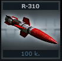
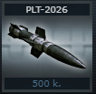
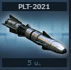
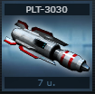
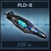
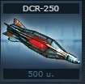
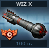
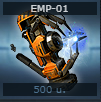

A játékban 12 rakéta található mindegyik rakéta más erősségű ezek
között vannak olyanok is amelyek képpenséggel bírnak.
Rakétafajták:
R-310

Rövidtávú rakéta.
Max. 1000 pont kárt okoz lövésenként.
Ára: 100 kredit.
PLT-2026

Közepes hatótávolságú rakéta.
Max. 2000 pont kárt okoz lövésenként.
Ára: 500 kredit.
PLT-2021

Nagy hatótávolságú rakéta.
Nagy károkat okoz, max. 4000 pont kárt okoz lövésenként!
Ára: 5 uridium.
PLT-3030

- Lövésenként 6000 életerőpont sebzés!
-
Ez a hatalmas teljesítmény azonban csökkenti a találati
valószínűséget.
-
Ezt a rakétát kiválóan kiegészíti a tech gyárban
kifejleszthető „rakétaprecízió” tech.
- Ára: 7 uridium.
PLD-8

-
Rövid ideig zavarja az ellenfél fegyvereit. Számtalan taktikai
módon alkalmazható.
-
5 másodpercig tart a hatása, 30 másodpercenként lehet újra
tüzelni.
-
Semmilyen extra nincs hatással rá, se a generátorgyorsító se a
rakétaturbó.
- Ára: 100 uridium.
DCR-250

- 5 másodpercre 30%-kal lelassítja az ellenfelet.
- EMP-el megszakítható.
- Ára: 500 uridium.
WIZ-X

- Megváltoztatja az ellenél megjelenését.
R-IC3
- 2 másodpercre lefagyasztja az ellenfelet.
- EMP-el megszakítható.
SR-5
A rakéta használatakor a saját hajó 25%-kal lelassul 3
másodpercre. 80 000 alapsebzést okoz az ellenfél pajzsán, és a
sebzés 50%-át (a SAR rakétához hasonlóan) pajzspontként
megkapja. Ez játékosra és NPC-re egyaránt használható.
- Hatótávolság: 525
- Találati esély: 100%
-
Újratöltési idő: 4 perc (az újratöltési boosterek nem hatnak
rá)
- Eladási ár: 250 kredit
K-300M
Ez a rakéta nemcsak jelentős sebzést okoz, de a lökéshulláma
olyan erővel rázza meg a hajót, hogy az áldozat sebessége
20%-kal, célzási pontossága pedig 5%-kal csökken 2 másodperc
erejéig.
- Újratöltés: 15 sec
- Sebzés: 12.000
- Találati esély: 75%
-
AGT-500 (Anti-Agatus Rocket): 125,000 átlagos kárt okoz Agatus
NPC-k számára, 25,000 kárt pedig minden másra. A hatalmas
sebzés miatt korlátozott hatótávval rendelkezik.
SP-100X (PAJZSTÖRŐ RAKÉTA)
Ez a rakéta elmellőzi a zavaró pajzsokat, és egyenesen az
áldozat hajótestét veszi célba. Átlagos sebzés: 7200, 50%-kal
több sebzéssel a játékoshajókon.
EMP-01

Az egyik bölcs régi mondás úgy tartja, ha nincs célod,
elvesztél. Az EMP-Burst elektromágneses impulzusok segítségével
megzavarja az ellenfeled űrhajójának kezelőrendszerét, ezért úgy
tudod lelőni, mint egy tehetetlen agyaggalambot. Egy kis
szerencsével a szerkezet töltése elég erős ahhoz, hogy ha egy
álcázott űrhajó tartózkodik a közelben, elveszíti az álcázását
is
Hogyan tudok rakétákat venni?
Üzleten belül a Muníció fülön. Illetve játékon belül Vásárlás
most menüfülben dupla kattintással.
-
Mindig elérhető rakéták: R-310, PLT-2026, PLT-2021, PLT-3030
- MHH után megvehető rakéták: PLD-8, DCR-250
- Event alkalmával szerezhető rakéták: WIZ-X, R-IC3
Hogyan tudom kilőni a rakétákat?
Játékon belül a Rakéták menüfülben dupla kattintással a
rakétára, amit ki akarsz lőni.
Tudom erősíteni a rakéták sebzését?
Igen, különböző nyersanyagok feltöltésével. Prometid 15%-al, a
Promerium 30%-al, míg a Seprom 60%-al növeli a sebzést. 1 db
nyersanyag 10 db rakéta feltöltésére elegendő. Ezenfelül a
Rakétamester képességpontok is erősítik a sebzését. Fűtőmester
képességpontok pedig javítják a rakéta találat valószínűségét.
Továbbá drón formációkkal is lehet növelni a sebzést. (Nyíl-
20%-al, csillag- 25%-al, halszálka formáció pedig 50%-al
növeli.) Minden démon drón dizájn növeli 1%-al a rakétasebzést.
(Maximum 10%)
Gyorsíthatom a rakéta újratöltési idejét?
Igen, Rakétaturbó CPU-val, valamint a Prémium játékosoknak
alapból kétszer gyorsabban tudnak rakétát lőni. A rakétaturbó és
a prémium okozott gyorsítás összeadódik, vagyis ha mindkettővel
rendelkezek, akkor az alap sebesség négyszeresével* *tölti
vissza a rakétát. Full démon drón dizájn esetén 5%-al csökken a
rakéták újratöltési ideje.